Projects
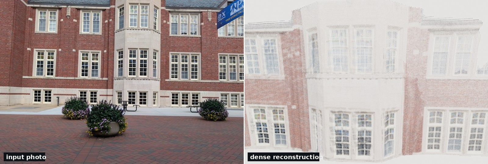
Low-Light Dense Monocular SLAM on Jetson
Ported a learned dense monocular SLAM stack (MASt3R-SLAM + Dark3R) to the Jetson AGX Orin for real-time operation in extreme low light, and built a raw-domain SNR degradation dataset, an exposure-confidence preprocessing stage, and an ATE/RPE harness to measure how far into the dark it holds a trajectory.
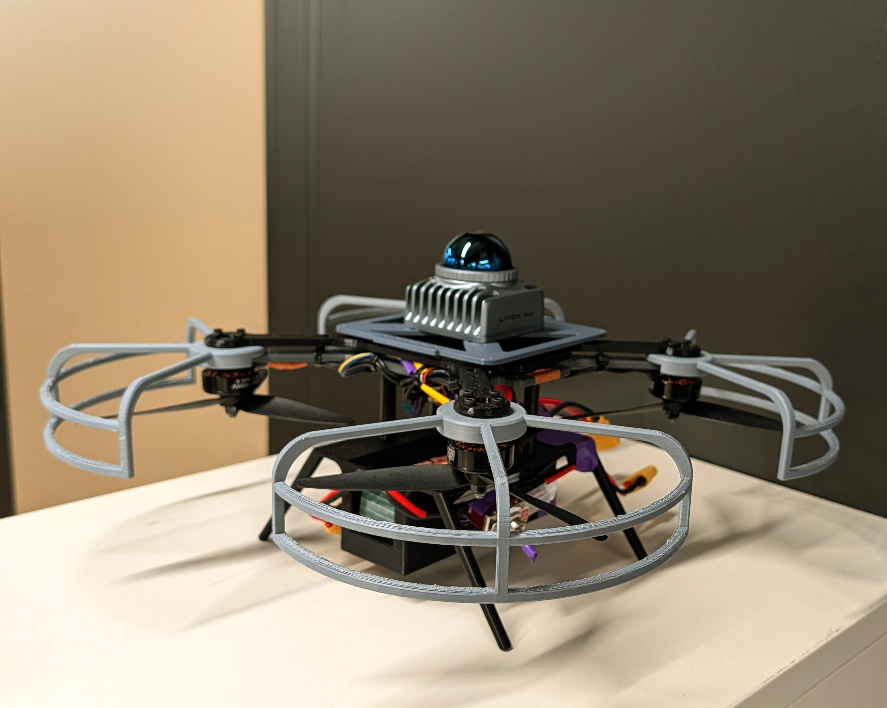
Autonomous Drone Navigation & Human Tracking
Building a robust CV pipeline for autonomous drone navigation and human tracking in dense forest canopies using LiDAR, RGB, and multi-object tracking.
Multi-Robot Warehouse Kitting & Fulfillment
Simulation-based multi-robot warehouse system in CoppeliaSim — five coordinated robots (UR10, PioneerP3DX+UR5, KUKA youBot, UR10 cobot) orchestrated by a centralized PLC-style coordinator using request-busy-done signaling.
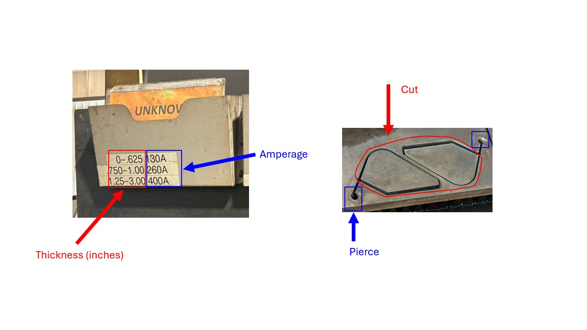
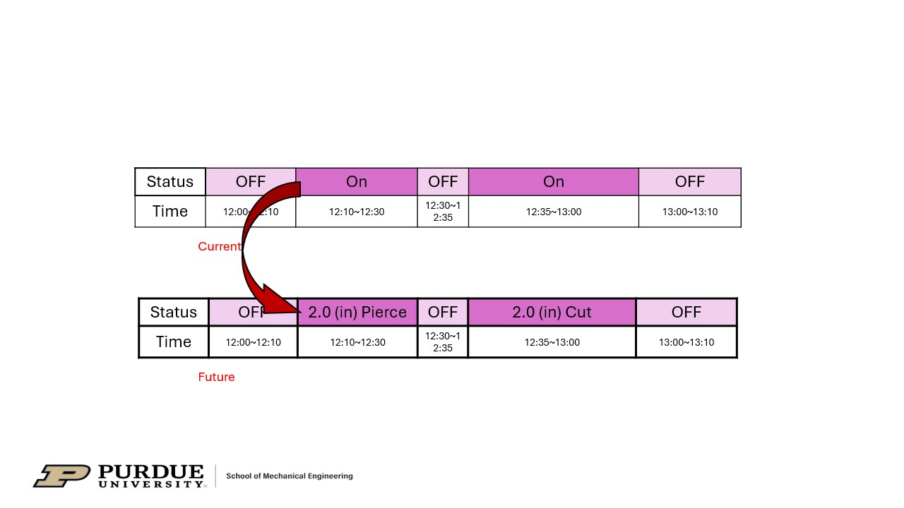
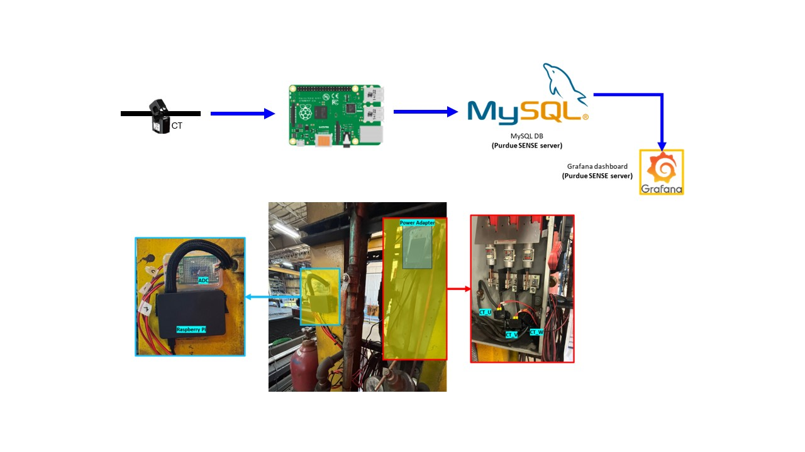
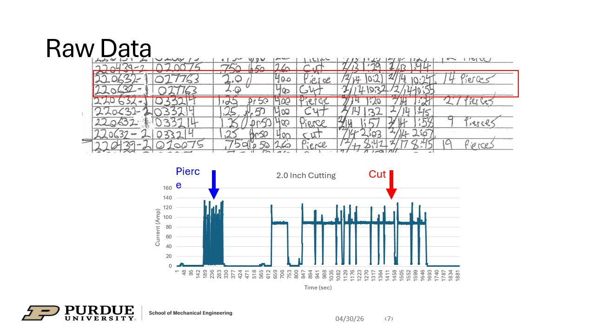
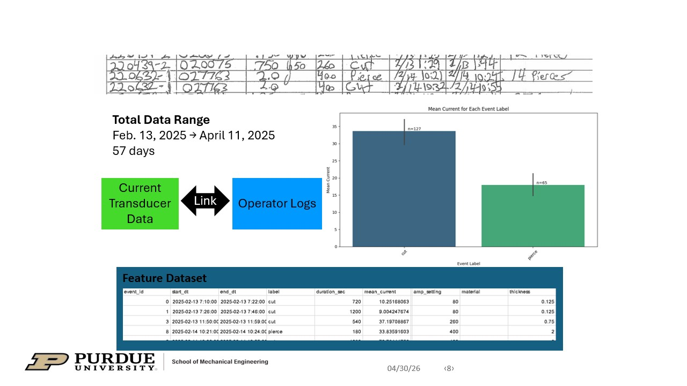
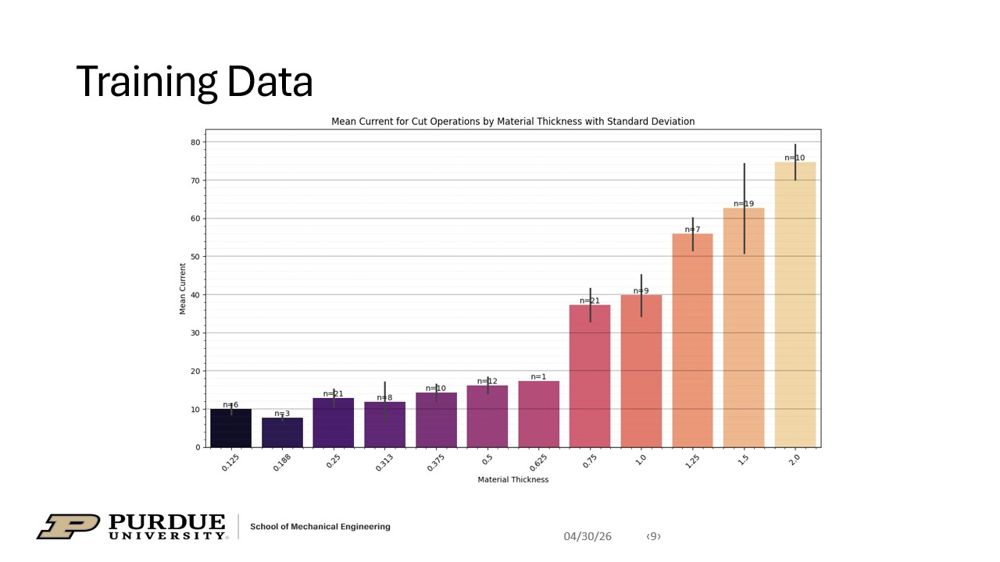
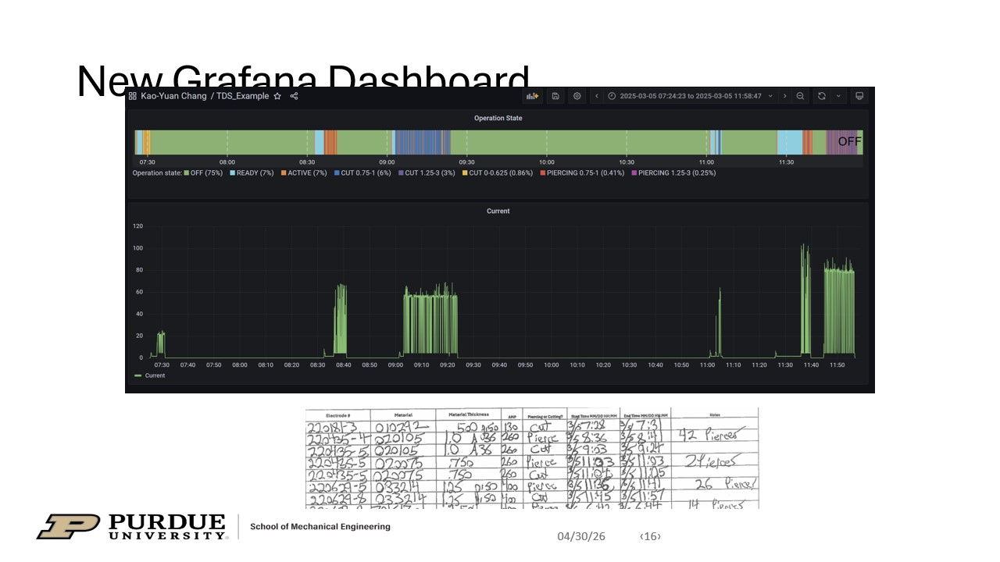
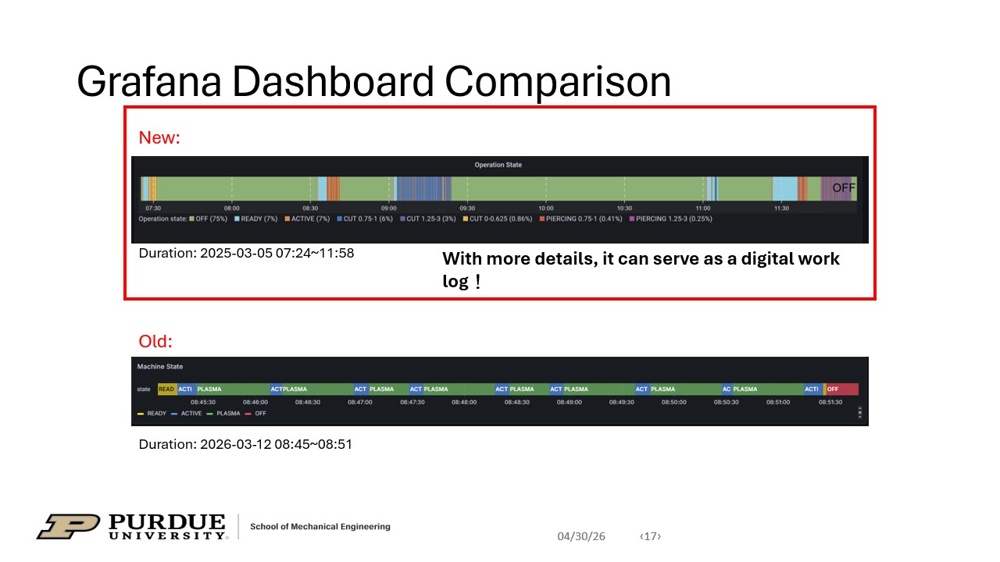
TDS In-House Plasma Cutting Monitoring System
Real-time acoustic and current data monitoring on CNC plasma cutting machine to classify sheet thickness and validate material specifications via Grafana dashboards.
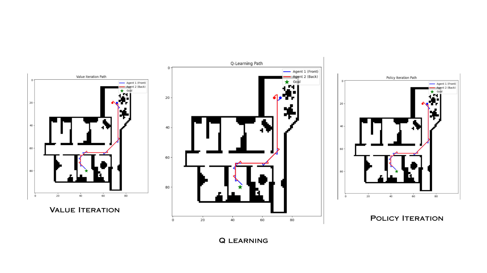
Cooperative Multi-Robot Transport Planning
Simulated multi-agent cooperative transport with kinematic constraints. Benchmarked Policy Iteration, Value Iteration, and Q-Learning for constrained navigation.
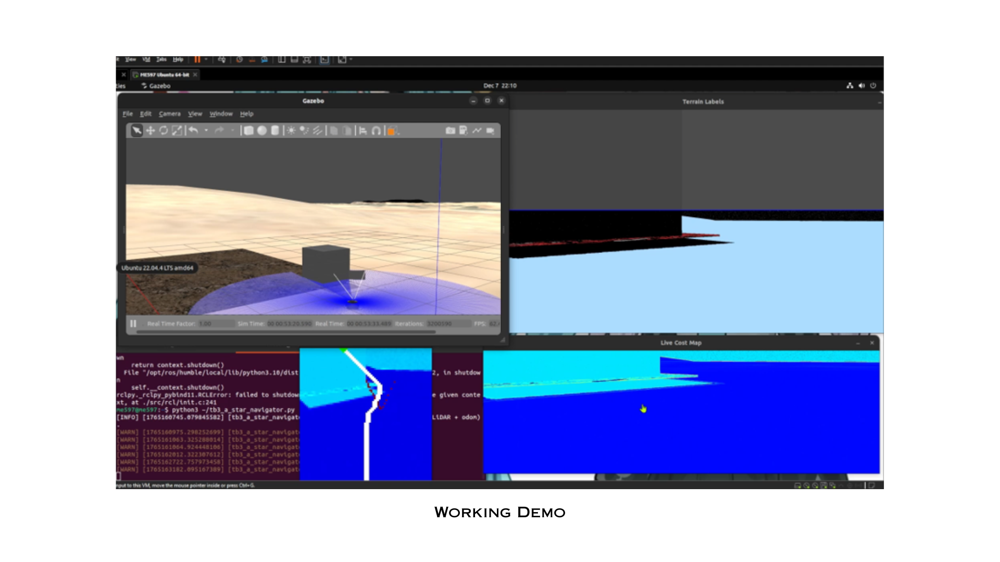
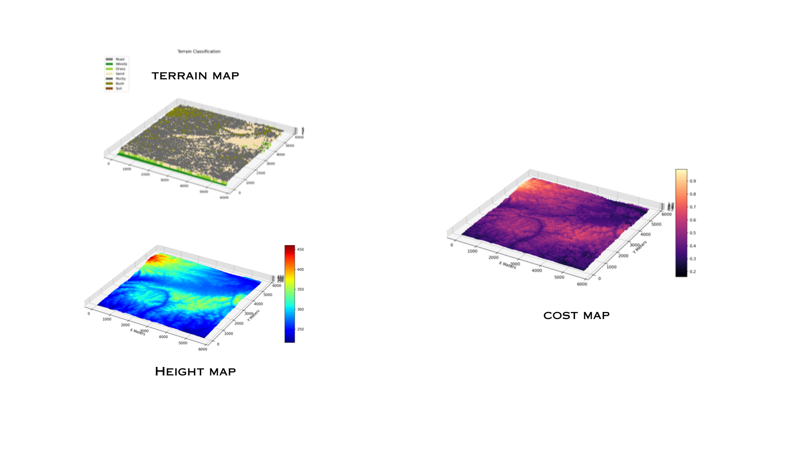
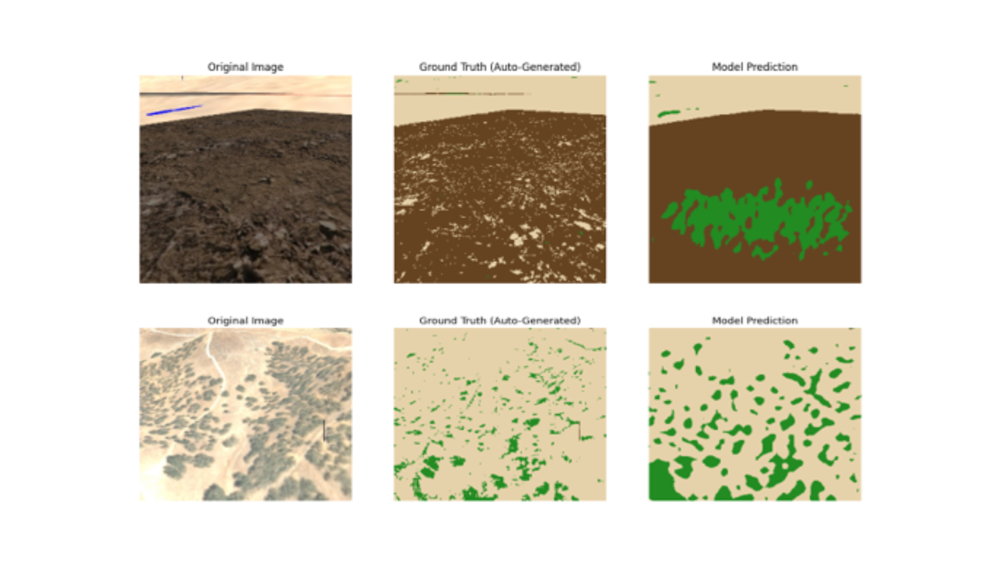
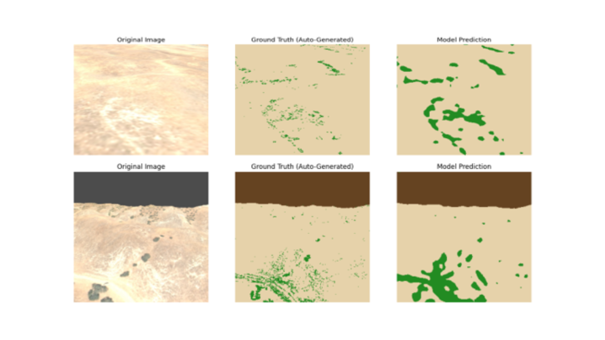
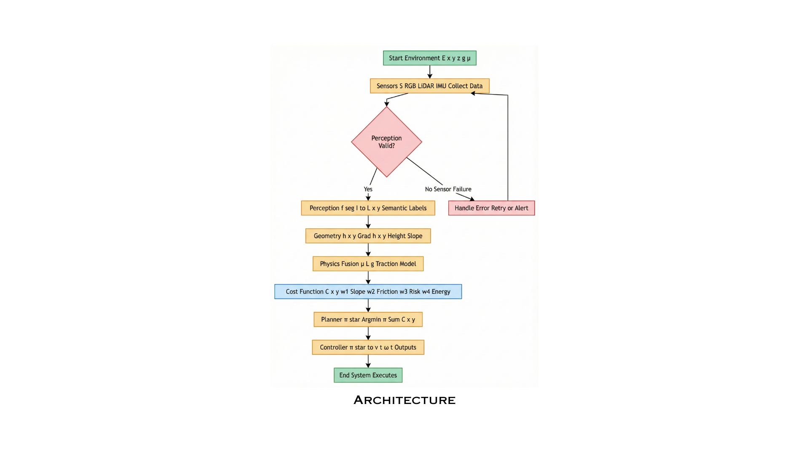
Vision-Guided Terrain-Aware Path Planning
Closed-loop Gazebo/ROS2 pipeline fusing LiDAR and RGB-D with DeepLabV3+ segmentation for real-time costmap generation and trajectory optimization. Documented in IEEE Format.

Automatic Medicine Dispenser
Custom singulation mechanism with Raspberry Pi controls. Sponsored by Eaton India, achieved Top 5 National finish in national innovation competition.
Multi-Robot System Integration
Programmed two Techman cobots (TM-12S "Daisey" and TM-12 "Rosie") and a Freight100 AMR ("Jerry") to execute a full 6-task pick-and-place and transport workflow, orchestrated via Node-RED.
Imitation Learning for Robot Manipulation
Built the full imitation learning pipeline on a real SO-ARM101 dual-arm platform — collected teleoperation demos, trained a visuomotor policy with LeRobot, and deployed it for autonomous pick-and-place.

Industrial Robotics Simulation Labs (5 Labs)
Five hands-on CoppeliaSim simulation labs covering pick-and-place, online vs offline programming, path planning, machine vision, and deep learning classification with a Sawyer cobot.

Introduction to Robotics ROS Simulation Labs (4 Labs)
RViz simulation platform for ROS2 application with the use of Universal Robots and using trajectory planning, curve tracing and ^ DoF arm simulation